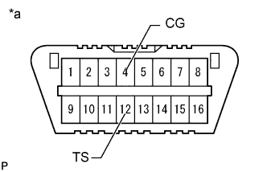
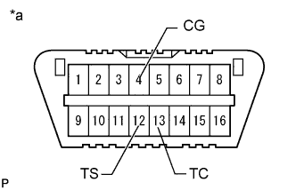

АНТИБЛОКИРОВОЧНАЯ СИСТЕМА ТОРМОЗОВ > ПОРЯДОК ПРОВЕДЕНИЯ АКТИВНОЙ ДИАГНОСТИКИ |
| ПОРЯДОК АКТИВНОЙ ДИАГНОСТИКИ (ПРОВЕРКИ СИГНАЛОВ) |
Войдите в режим активной диагностики (при использовании портативного диагностического прибора).
Выключите зажигание.
Убедитесь, что рулевое колесо установлено в центральное положение.
Убедитесь в том, что рычаг переключения передач находится в нейтральном положении, и включите стояночный тормоз.
Подсоедините портативный диагностический прибор к DLC3.
Установите замок зажигания в положение ON (ВКЛ).
Включите портативный диагностический прибор.
Войдите в следующие меню: Chassis / ABS/VSC/TRC / Signal Check.
Убедитесь, что контрольная лампа ABS загорается на несколько секунд, а затем мигает по схеме режима активной диагностики (0,125 с включена и 0,125 с выключена).
Войдите в режим активной диагностики (при использовании диагностического жгута проводов SST).
Выключите зажигание.
Убедитесь, что рулевое колесо установлено в центральное положение.
Убедитесь в том, что рычаг переключения передач находится в нейтральном положении, и включите стояночный тормоз.
|  |
С помощью SST соедините контакты 12 (TS) и 4 (CG) на DLC3.
| *a | Вид спереди разъема DLC3 |
Установите замок зажигания в положение ON (ВКЛ).
Убедитесь, что контрольная лампа ABS мигает по схеме режима активной диагностики (0,125 с включена и 0,125 с выключена).
| Неисправный участок | См. стр. |
| Цепь контактов TS и CG |
Нажмите здесь
|
| Цепь контрольной лампы ABS (постоянно включена) |
Нажмите здесь
|
| Цепь контрольной лампы ABS (не включается) |
Нажмите здесь
|
| ПРОВЕРКА СИГНАЛОВ АБС |
Проверка определения давления разрежения в гидроусилителе и калибровка "нуля" датчика давления в главном цилиндре
Отпустите стояночный тормоз.
Установите замок зажигания в положение ON (ВКЛ).
Убедитесь, что при нажатии педали тормоза с усилием 59 Н (6 кгс, 13,2 фунт-силы) или более в течение не менее 1 с включается контрольная лампа состояния тормозной системы (давление разрежения в гидроусилителе признано нормальным).
Запустите двигатель и нажимайте на педаль тормоза с усилием более 59 Н (6 кгс, 13,2 фунт-силы) в течение не менее 1 с.
Убедитесь, что при быстром отпускании педали тормоза контрольная лампа состояния тормозной системы гаснет (давление разрежения в гидроусилителе признано нормальным).
Оставьте автомобиль в таком состоянии, по крайней мере, на 1 с (для калибровки "нуля" датчика давления в главном цилиндре).
Проверка датчика блокировки межосевого дифференциала
Установите переключатель положения раздаточной коробки в положение H4L, чтобы заблокировать межосевой дифференциал.
Установите переключатель положения раздаточной коробки в положение H4F, чтобы разблокировать межосевой дифференциал.
Проверка датчика частоты вращения
Двигайтесь на автомобиле прямо.
Разгоните автомобиль до скорости не менее 45 км/час (28 миль в час) на несколько секунд (проверка сигнала переднего хода).
Убедитесь, что контрольная лампа ABS погасла.
Двигайтесь на автомобиле задним ходом в течение более 1 с со скоростью не менее 3 км/час (2 мили в час) (проверка сигнала заднего хода).
Убедитесь, что контрольная лампа ABS погасла.
Остановите автомобиль.
| КОНЕЦ ПРОВЕРКИ СИГНАЛОВ |
По окончании проверки сигналов контрольная лампа ABS начинает мигать (0,125 с включена и 0,125 с выключена), если автомобиль остановлен, и гаснет, если автомобиль находится в движении.
| СЧИТАЙТЕ DTC ФУНКЦИИ ПРОВЕРКИ СИГНАЛОВ |
Если портативный диагностический прибор используется:
Проверьте, отображаются ли коды DTC на экране диагностического прибора.
Выключите зажигание и отсоедините портативный диагностический прибор.
При использовании диагностического жгута проводов SST:
|  |
С помощью SST соедините контакты 12 (TS), 13 (TC) и 4 (CG) на DLC3.
| *a | Вид спереди разъема DLC3 |
Подсчитайте число миганий контрольной лампы ABS.
Отсоедините SST от контактов 12 (TS), 4 (CG) и 13 (TC) разъема DLC3 и выключите зажигание.
Установите замок зажигания в положение ON (ВКЛ).
| ПЕРЕЧЕНЬ DTC АКТИВНОЙ ДИАГНОСТИКИ (ПРОВЕРКИ СИГНАЛОВ) |
| Код DTC | Неисправность | Неисправный участок | |
| Дисплей портативного диагностического прибора | Индикация посредством контрольной лампы ABS | ||
| C1271 | 71 | Слабый выходной сигнал правого переднего датчика частоты вращения |
|
| C1272 | 72 | Слабый выходной сигнал левого переднего датчика частоты вращения |
|
| C1273 | 73 | Слабый выходной сигнал правого заднего датчика частоты вращения |
|
| C1274 | 74 | Слабый выходной сигнал левого заднего датчика частоты вращения |
|
| C1275 | 75 | Ненормальное изменение выходного сигнала правого переднего датчика частоты вращения | Ротор датчика частоты вращения |
| C1276 | 76 | Ненормальное изменение выходного сигнала левого переднего датчика частоты вращения | Ротор датчика частоты вращения |
| C1277 | 77 | Ненормальное изменение выходного сигнала правого заднего датчика частоты вращения | Ротор датчика частоты вращения |
| C1278 | 78 | Ненормальное изменение выходного сигнала левого заднего датчика частоты вращения | Ротор датчика частоты вращения |
| C1279 | 79 | Недопустимое напряжение на выходе датчика замедления |
|
| C1281 | 81 | Недопустимое напряжение на выходе датчика давления в главном цилиндре |
|
| C1282 | 82 | Неисправность датчика положения блокировки межосевого дифференциала |
|